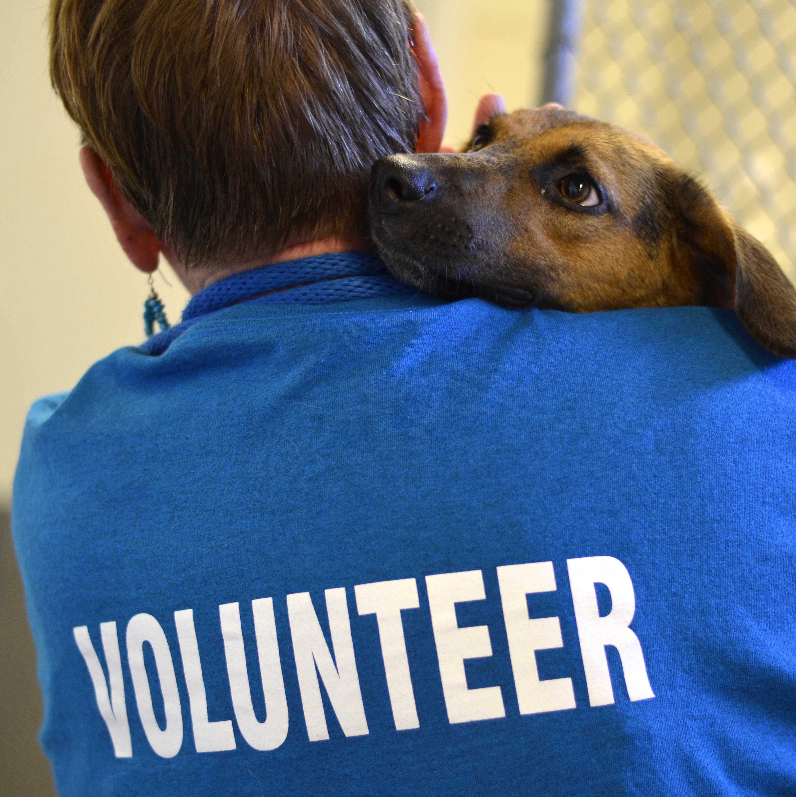
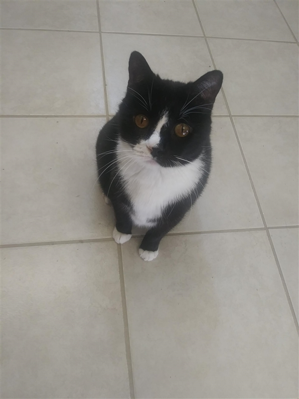

Volunteer Coordinator:
Ashley Smith ASmith@shelter.com

Volunteers are the lifeblood of the Mt Pleasant Animal Shelter. We welcome volunteers of all ages, but those under 18 must volunteer with a family member.
To volunteer, you must attend an orientation session, which are held monthly. You also must complete the Volunteer Application2017. Complete it and bring with you to orientation.
Orientation should last about 1 hour, then you will set up your first volunteering time with a mentor who is an experienced volunteer to show you the ins and out of everything we do here.
After that you will be certified to volunteer on your own.

Those needing to fill community service hours may do so without attending volunteer training. They will not be allowed to come in contact with the animals and may volunteer without a parent present if they are under 18. It is recommended that those filling community service hours arrive at 8 a.m. and be prepared to sweep, mop or do dishes.
115 Industrial Drive Mt Pleasant, TN 37122 ♦ (615) 773-5533